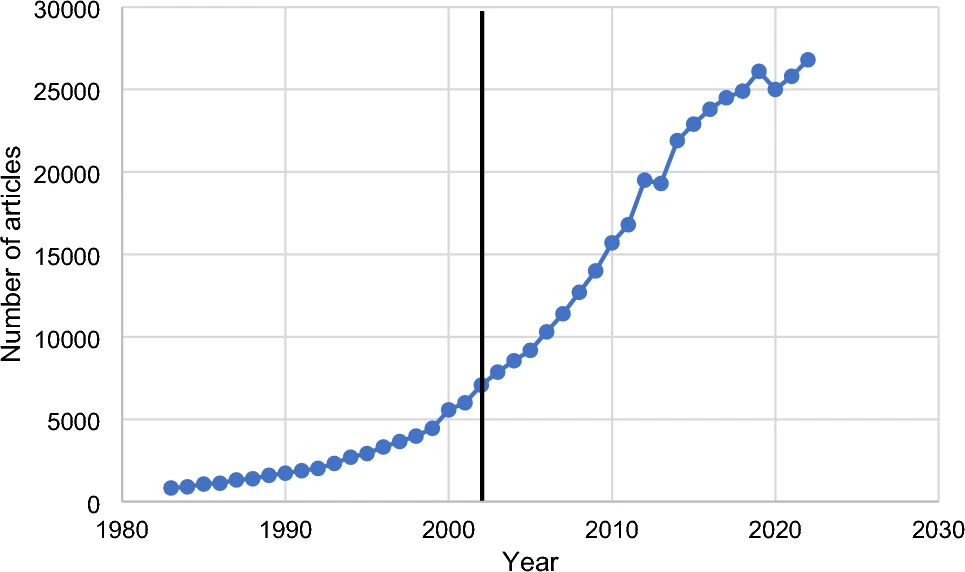

<div class="middle center"> <div style="width: 100%"> # 知识图谱与大模型 金融科技导论与实践——2024 Summer <hr/> By [金杰鹏](https://github.com/JiepengLab) [https://slide.jiepeng.tech/AIC](https://slide.jiepeng.tech/AIC) </div> </div> <!-- v --> ## 实验目的 围绕知识图谱或大模型实现金融领域的相关应用，例如基于大模型的金融知识图谱自动化生成、基于图神经网络的客户群体分类等等。 <div class="fragment"> <div style="text-align: center;"> </div> </div> <!-- s --> <div class="middle center"> <div style="width: 100%"> 方向一 # 基于大模型的金融知识图谱自动化生成 </div> </div> <!-- v --> ## 任务描述 <div class="fragment"> 通过大模型技术，自动化生成针对特定金融领域的知识图谱。我们需要从金融文本中抽取实体和关系，基于大模型实现知识图谱的构建，并且将知识图谱存储在Neo4j数据库中。 </div> --- <div class="fragment"> ## 当前研究现状 目前，已经有多种**知识大语言模型**可以进行**实体和关系抽取**，例如：智析、OneKE和GPT4IE等。这些方法可以通过预训练的大模型，实现金融文本的实体和关系抽取。 <!-- v --> </div> ## 思路 采用大模型框架 [GPT4IE](https://github.com/cocacola-lab/GPT4IE)，通过预训练的大模型，实现金融文本的实体和关系抽取。然后将抽取的实体和关系存储在Neo4j数据库中，构建金融知识图谱。 </div> <div class="fragment"> [演示](http://localhost:3000/) </div> <div class="fragment"> <div style="text-align: center;"> </div> </div> <!-- v --> ## 思路 <div class="fragment"> 由于[GPT4IE](https://github.com/cocacola-lab/GPT4IE)这个框架也比较老了，其内部采用的是 **Completions API** (i.e., the GPT-3 API)。 它与最新的 **Chat Completions API** (i.e., the GPT-3.5 API) 不兼容。 </div> <div class="fragment"> - Completions API：必需参数为 model 和 prompt - Chat Completions API：必需参数为 model 和 messages </div> <div class="fragment"> 所以我们在使用时需要注意这个问题，将参数传递正确。 </div> <!-- v --> ## 思路 <div class="fragment"> 之后计划将这个框架进行升级，使其能够读取所有的数据集，并自动化生成知识图谱。然后将生成的知识图谱存储在Neo4j数据库中，实现金融知识图谱的自动化生成。 </div> <!-- s --> <div class="middle center"> <div style="width: 100%"> 方向二 # 基于图学习的客群分类任务 </div> </div> <!-- v --> ## 任务描述 <div class="fragment"> 客群分类任务是数据分析和机器学习中的一种常见任务，旨在根据客户的行为、特征或偏好，将客户划分为不同的组或类别，以便企业能够更有针对性地进行市场营销、产品推荐和服务优化。 </div> <div class="fragment"> 基于图学习的客群分类任务主要考察搭建客群挖掘算法的能力，我将基于图神经网络算法预测图上每个节点的所属的客群标签。 </div> <div class="fragment"> 实验采用的数据集为 [CiteSeer](https://github.com/kimiyoung/planetoid)。 | 节点数量 | 边数量 | 特征数量 | 客群标签数量 | | :----: | :----: | :----: | :----: | | 3327 | 9104 | 3703 | 6 | </div> <!-- v --> ## 数据集 实验文档提供的数据集中，关于CiteSeer的部分有： <div class="fragment"> ```shell 1. ind.citeseer.allx # 标记和未标记训练实例的特征向量（x的超集） 2. ind.citeseer.ally # allx中实例的标签 3. ind.citeseer.graph # 一个格式为 {index: [邻居节点的索引]} 的字典 4. ind.citeseer.test.index # 图中测试实例的索引，用于归纳设置 5. ind.citeseer.tx # 测试实例的特征向量 6. ind.citeseer.ty # 测试实例的独热标签 7. ind.citeseer.x # 标记训练实例的特征向量 8. ind.citeseer.y # 标记训练实例的独热标签 ``` </div> <div class="fragment"> 可以使用`cPickle.load(open(filename))` 来加载numpy/scipy对象`x`, `y`, `tx`, `ty`, `allx`, `ally`, 和 `graph`。 </div> <!-- v --> ## 思路 <div class="fragment"> 我将采用[图聚合卷积（GraphSAGE）算法](https://github.com/williamleif/GraphSAGE)，GraphSAGE是一种采样和聚合的图卷积算法，通过采样节点的邻居子图并聚合邻居节点的特征，以迭代方式更新节点表示，从而在保留图结构的同时有效地学习节点的低维度表示，适用于节点表示学习和图分类任务。 </div><div class="fragment"> <div style="text-align: center;"> </div> </div> <!-- v --> ## GraphSAGE 输入格式 <div class="fragment"> ```shell <train_prefix>-G.json -- A networkx-specified json file describing the input graph. Nodes have 'val' and 'test' attributes specifying if they are a part of the validation and test sets, respectively. <train_prefix>-id_map.json -- A json-stored dictionary mapping the graph node ids to consecutive integers. <train_prefix>-class_map.json -- A json-stored dictionary mapping the graph node ids to classes. <train_prefix>-feats.npy [optional] --- A numpy-stored array of node features; ordering given by id_map.json. Can be omitted and only identity features will be used. <train_prefix>-walks.txt [optional] --- A text file specifying random walk co-occurrences (one pair per line) (*only for unsupervised version of graphsage) ``` </div> <div class="fragment"> 因为我们最好是进行无监督的训练，所以我们需要制作G.json、id_map.json、class_map.json、walks.txt这几个文件。 </div> <!-- v --> ## 思路 <div class="fragment"> 由于 GraphSAGE 有很多型号变体 </div> <div class="fragment"> ```shell 1. graphsage_mean -- 基于均值聚合器的GraphSage 2. graphsage_seq -- 基于LSTM聚合器的GraphSage 3. graphsage_maxpool -- 基于最大池化聚合器的GraphSage（如NIPS 2017论文中所述） 4. graphsage_meanpool -- 基于均值池化聚合器的GraphSage（池化聚合器的变体，其中元素均值替换了元素最大值） 5. gcn -- 基于GCN聚合器的GraphSage 6. n2v -- DeepWalk的实现（代码中简称为n2v） ``` </div> <div class="fragment"> 我将逐一尝试这些模型，进行客群分类任务，看看哪个模型效果最好。 </div> <!-- v --> ## GraphSAGE demo <div class="fragment"> <div style="text-align: center;"> </div> </div> <!-- v --> ## 当前研究现状 <div class="fragment"> <div style="text-align: center;">  </div> 在 Google Scholar 中搜索 [+ segmentation + marketing] 时的大致搜索结果如上。 </div> <div class="fragment"> - DeepLimeSeg(Mathematics 2023)将深度学习方法与基于 Lime 的可解释性相结合，以有效地细分客户。 </div> <!-- s --> <div class="middle center"> <div style="width: 100%"> # 谢谢！恳请老师批评指正 </div> </div>